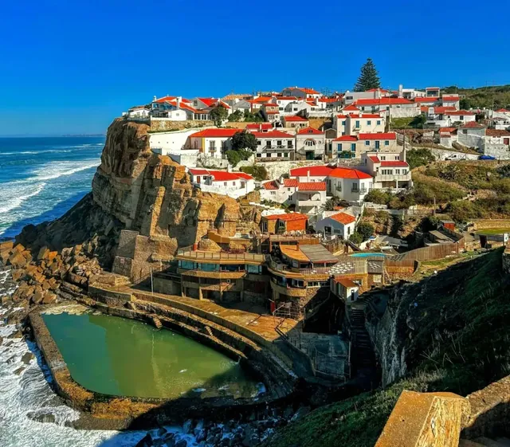

Sintra native
Born and raised in Sintra
Roads, timing, and quiet corners only a local knows.
Private Sintra Tours
Sintra and the Atlantic coast with Rita Almeida — your private local guide.
5.0 · 6 TripAdvisor reviewsOne group, one guide, your pace.
Roads, timing, and quiet corners only a local knows.
Your route and tempo — never a fixed group schedule.
Iconic views and coastal detours, without the rush.
Two private routes. Book directly with Rita.
Message Rita on WhatsApp to check dates, payment options, and booking details.
You can also book through Viator when available.

Historic Sintra · Pena area · Cabo da Roca · Cascais
Sintra Historic Center · National Palace Area · Castelo dos Mouros Viewpoint · Serra de Sintra · Pena Palace Viewpoint · Cabo da Roca · Cascais

Sintra hills · Hidden coves · Azenhas do Mar
Sintra Historic Center · National Palace Area · Castelo dos Mouros Viewpoint · Serra de Sintra · Pena Palace Viewpoint · Praia das Maçãs · Azenhas do Mar · Praia da Aguda
Sintra-born guide. Calm pacing, local insight, room to enjoy the day.
5.0/5
All reviews rated 5 stars
✓ Verified on TripAdvisor
"Warm, personal, and full of local insight. Rita made Sintra feel special from start to finish."
✓ Verified on TripAdvisor
"Clear, friendly, and well-paced. Rita knew exactly where to go and how to make it easy."
✓ Verified on TripAdvisor
"Local knowledge made the difference. We saw places we would never have found on our own."
✓ Verified on TripAdvisor
"A relaxed private tour with great stories, smart pacing, and thoughtful local recommendations."
✓ Verified on TripAdvisor
"Professional, warm, and deeply knowledgeable. The whole day felt easy and well looked after."
✓ Verified on TripAdvisor
"Memorable from the first stop. Rita showed the best viewpoints and hidden spots with care."
Pickup in Lisbon, private guide (Rita Almeida), and transport. Max 4 guests. Palace tickets are not included.
Message Rita on WhatsApp to check dates, payment options, and booking details. You can also book through Viator when available.
Yes — with 24 hours' notice at no cost.
From your hotel or accommodation in Lisbon. Rita confirms details when you book.
Yes. Rita adapts stops, pace, and route for your group, weather, and interests.
Share your dates and group size. Rita replies with availability and the best route.
Message Rita on WhatsApp to check dates, payment options, and booking details.
You can also book through Viator when available.